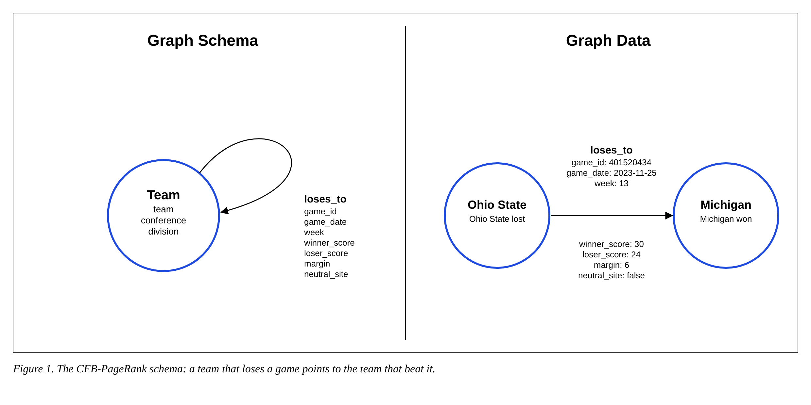

CFB-PageRank
A graph model and ranking of Division I college football teams. Because humans introduce bias.
A team that loses a game points to the team that beat it. Run PageRank on that graph after every week of the season and you get a ranking with no vote in it. This site holds the data, the graph, the weekly rankings, and the comparison with the human polls for the 2023, 2024, 2025, and 2026 seasons. The code and the write-ups are in the repository.
Watch the Rankings Move
One page per season. Drag the week slider, switch between the unweighted and weighted graphs, search for a team, and open the rank-over-time view.
| season | page | what it holds |
|---|---|---|
| 2023 | visualization/2023 | Regular season through rivalry week. |
| 2024 | visualization/2024 | Regular season through rivalry week. |
| 2025 | visualization/2025 | Regular season through rivalry week. |
| 2026 | visualization/2026 | Season in progress, games through November 21, 2026. |
The Schema

Figure 1. The CFB-PageRank schema: a team that loses a game points to the team that beat it.
Read the Results
| what | where |
|---|---|
| The 2026 PageRank top 25 as of the data cutoff | analysis/2026_prediction/prediction.md |
| PageRank beside the AP, Coaches, and CFP rankings, week by week | analysis/ |
| The weekly PageRank tables, unweighted and weighted | pagerank/ |
| The graph files and how the translation was checked | graph_model/ |
| The games, the teams, the polls, and the verification records | datasets/ |
Every CSV file is also served from this site, so a link such as datasets/2024/games.csv downloads the data directly.
Cite and Reuse
Gosnell, Denise Koessler. CFB-PageRank: a graph model and PageRank ranking of Division I college football. 2026. https://github.com/denisekgosnell/CFB-PageRank
Copyright 2026 Denise Koessler Gosnell. Source code under the Apache License 2.0; data, tables, figures, and documentation under CC BY 4.0. Reuse requires attribution.